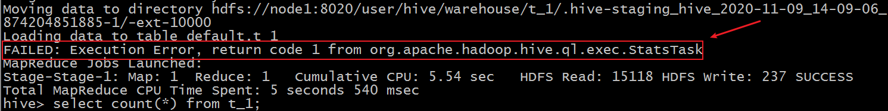
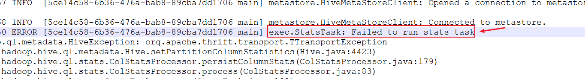
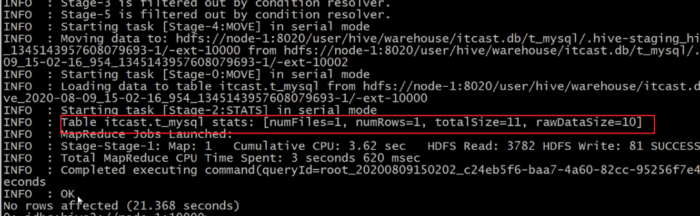
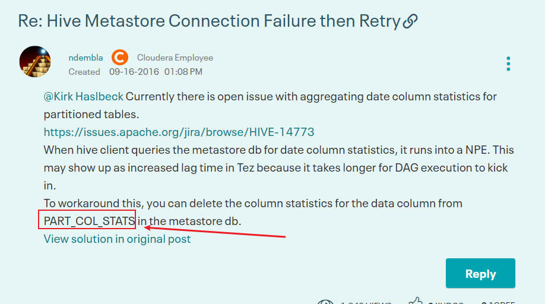

02 Hive3安装
Hive3安装
Mysql安装
- 卸载Centos7自带的mariadb
- 安装mysql
- mysql初始化设置
- 修改root密码 授权远程访问 设置开机自启动
- Centos7 干净卸载mysql 5.7
Hive的安装
- 上传安装包 解压
- 解决Hive与Hadoop之间guava版本差异
-
修改配置文件
-
hive-env.sh
-
hive-site.xml
-
上传mysql jdbc驱动到hive安装包lib下
- 初始化元数据
- 在hdfs创建hive存储目录（如存在则不用操作）
-
启动hive
-
1、启动metastore服务
-
2、启动hiveserver2服务
-
3、beeline客户端连接
-
拷贝node1安装包到beeline客户端机器上（node3）
-
错误
- 修改
xml 在hadoop的配置文件core-site.xml中添加如下属性： <property> <name>hadoop.proxyuser.root.hosts</name> <value>*</value> </property> <property> <name>hadoop.proxyuser.root.groups</name> <value>*</value> </property>- 连接访问
-
错误解决：Hive3执行insert插入操作 statstask异常
-
现象

-
开启hiveserver2执行日志。查看详细信息

-
但是 此错误并不影响最终的插入语句执行成功。
-
分析原因和解决
- statstask是一个hive中用于统计插入等操作的状态任务 其返回结果如下

-
此信息类似于计数器 用于告知用户插入数据的相关信息 但是不影响程序的正常执行。
-
Hive新版本中 这是一个issues 临时解决方式如下
https://community.cloudera.com/t5/Support-Questions/Hive-Metastore-Connection-Failure-then-Retry/td-p/151661

- 在mysql metastore中删除 PART_COL_STATS这张表即可。